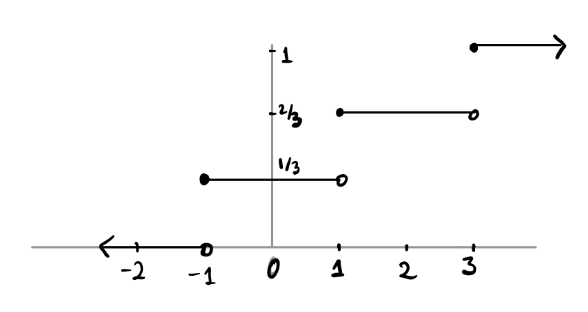
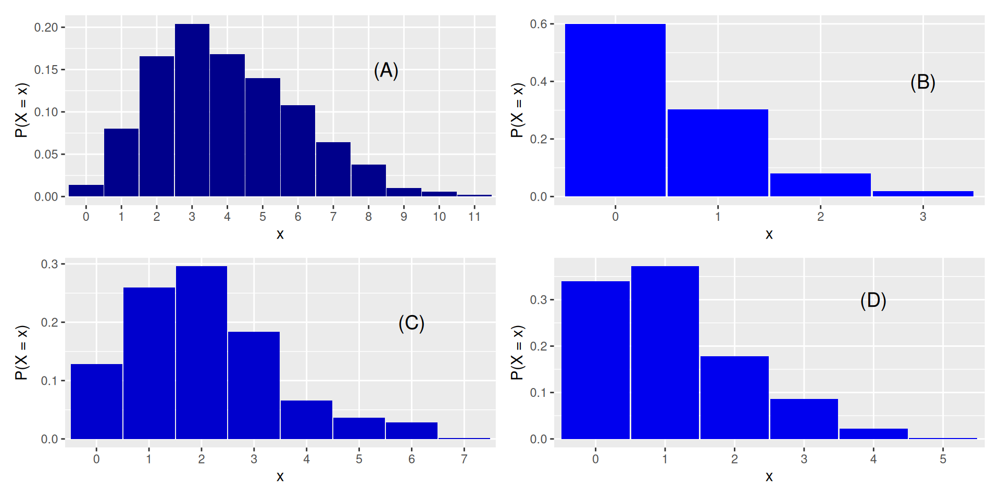

01:00
Random Variables
STAT 20: Introduction to Probability and Statistics
Agenda
- Announcements
- Review: Probability Distributions
- Break
- Lecture: Random Variables
- Appendix: More practice!
Annonuncements
- Portfolio 4 (three worksheets) due next Monday at 12pm
- Quiz 2 on Thursday!
Review: Probability Distributions
30:00
Break
05:00
Lecture: Random Variables
Appendix: more practice!
Random variables
Let \(X\) be the number of heads in three tosses of a fair coin. What is the distribution of \(X\)? That is, what is \(f(x) = P(X = x)\)? What values will \(x\) take?
What about if \(X\) is the number of heads in 3 tosses of a biased coin, where the chance of heads is \(\frac{2}{3}\)? Now what is \(f(x) = P(X = x)\)?
Now suppose we toss a fair coin until the first time it lands heads, and let \(X\) be the number of tosses (including the last one, which is the first time the coin lands heads). What is the pmf of \(X\)? Is it binomial?
Finally, let’s consider a deck of cards, and we are interested in the number of hearts dealt in a hand of five. Call this number \(X\). What is the pmf of \(X\)?
\(f(x)\) and \(F(x)\)
\(f(x)\) is the probability mass function of \(X\). What does that mean? What is the connection to the distribution table? The probability histogram?
\(F(x)\) is the cumulative distribution function.
What is the connection between \(f\) and \(F\)?
Concept Questions
Roll a pair of fair six-sided dice and let \(X = 1\) if the dice land showing the same number of spots, and \(0\) otherwise. For example, if both dice land \(2\), then \(X = 1\), but if one lands \(2\) and the other lands \(3\), then \(X = 0\).
What is \(P(X=1)\)?
01:00
The graph of the cdf of a random variable \(X\) is shown below. What is \(F(2)\)? What about \(f(2)\)?

01:00
You have \(10\) people with a cold and you have a remedy with a \(20\%\) chance of success. What is the chance that your remedy will cure at least one sufferer? (Let \(X\) be the number of people cured among the 10. We are looking for the probability that \(X \ge 1\))
What is the chance that at least one person is cured?
01:00
There are 4 histograms of different Poisson distributions below. Match each distribution to its parameter \(\lambda\). Recall that \(\lambda\) is how many occurrences we think will happen in a given period of time.
\[ (1)\: \lambda = 0.5 \hspace{2cm} (2)\: \lambda = 1 \hspace{2cm} (3) \: \lambda = 2 \hspace{2cm} (4) \: \lambda = 4\hspace{2cm} \]
